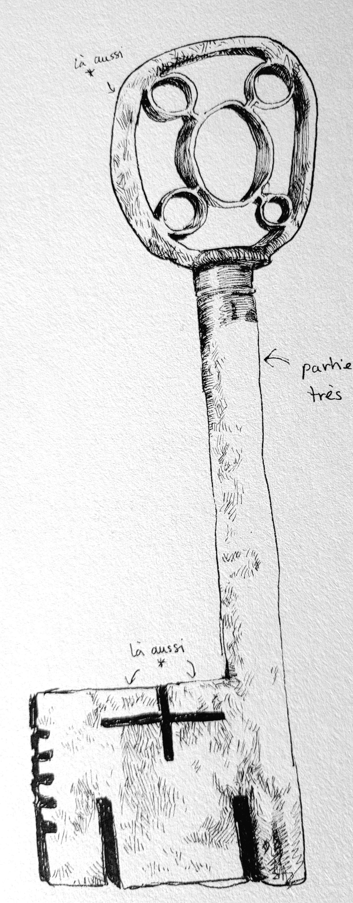

Ce que j’ai découvert le mois dernier dépasse l’entendement. Je sais que pour vous chers lecteurs qui n’auront que ma parole pour récit ceci va vous sembler irréel mais je vous demande de me lire avec une grande ouverture d’esprit.
Le 16 janvier 2003 je prenais un avion long courier au départ de l’aéroport Charles de Gaulle en direction d’Auckland en nouvelle Zélande pour une durée de 23h et 17 minutes. Après une courte escale d’environ 2h30, je fus obliger de reprendre un deuxième avion en direction de Brisbane pour arriver à ma destination finale : l’Australie.
Ce deuxième vol, bien que beaucoup plus court, fut d’un ennui mortel, le temps pluvieux que m’offrait cet hémisphère ne me permit pas d’observer le paysage et sans distraction supplémentaire (le premier voyage m’ayant permis de finir le roman Siva de Philip k. Dick) je dû me résoudre à errer dans mon esprit jusqu’à la fin du voyage.
A l’aéroport, une voiture envoyé par ma maison d’édition me fit faire le trajet Brisbane - Teelah en à peine moins de 2h.
Mon travail en cette période de l’année était de sillonner les villages du mondes pour le futur best seller de Jean Echenoz qui cherchait à recueillir les dialectes de différents pays. Bien trop vieux pour faire ces odieux déplacements, cette tâche de longue durée m’avait été confiée.
À peine arrivé dans ce nouveaux village, deux jeunes, un garçon et une fille accoururent vers ma voiture en parlant un anglais peu compréhensible, du fait de leur jeune âge.
Étant français et écrivain les villages que je parcourais avaient tendances à être plutôt accueillant, les populations locales étaient souvent prévenues par mes supérieurs que je viendrais séjourner quelques jours dans leurs villages.
Mais cette fois ci c’était différent.
Le village comptait une centaine d’habitants et pour eux tous, j’avais l’impression d’être un dieu, et ce n’est pas une exagération, les deux enfants que j’ai rencontré à mon arrivé ne cessaient pas de m’appeler Baiame, une divinité australienne. J’avoue ne pas y avoir tellement prêté attention au premier abord mais c’est très surprenant.
Plus mon séjour s’allongeait, plus l’aura du lieu se transformait. Je découvris au détour d’une conversation entre deux membres du village qu’ils avaient fait par je ne sais quel moyen l’acquisition d’une « clé » ( si je me fie à ma compréhension de leur anglais quelque peu modifié ) capable d’ouvrir toute les portes, même celles n’ayant pas de serrure. 
Même eux ne savent pas d’où elle viendrait ou quel serait son but ici sur notre planète.
J’ai pendant longtemps cherché cette clé mais à chaque fois les habitants faisaient en sorte que je ne la vois pas.
Il m’a fallu plus de 3 semaine pour avoir l’opportunité de l’apercevoir et qu’elle ne fut pas ma déception en la découvrant : c’était une vulgaire clé d’époque qui ne laissait espérer une once de magie.
Son pouvoir ne me fut dévoilé qu’après une réunion des villageois.
Sous mon regard inquiet, sa lente transformation m’emporta au delà du réel, j’eu l’impression de découvrir une nouvelle forme de vie divine.
Son enveloppe métallique se mit à grincer de toute part et à briller de milles feux, et sans même que je m’en aperçoive, la clé s’était transformée en quelque chose d’autre. Ce n’était ni une clé ni un autre objet, c’était encore autre chose. Quelque chose de plus grand.
Je ne saurais décrire cet événement si particulier.
Personne n’est préparé pour ce genre de chose.
De toutes mes expériences passées ce fut sans nul doute la plus déroutante.
Malheureusement après 1 mois passé à côtoyer ces villageois et leur étrange clé, la maison d’édition dans laquelle je travaillais (qui évidemment ignorait tout de cet objet) me demandait de rentrer en France.
Jamais je ne reverrais un tel mystère.
J’ai laissé une part de moi là-bas, dans cette clé, et j’espère qu’un jour quelqu’un saura me donner ne serait-ce qu’un fragment d’explication.
mes souvenirs de la clé